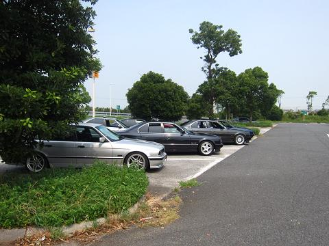 集合の10時過ぎに到着！ 今回も集合時間前からかなりの台数が到着していたそうだ。 一番乗りは９時前だったとか（笑 |
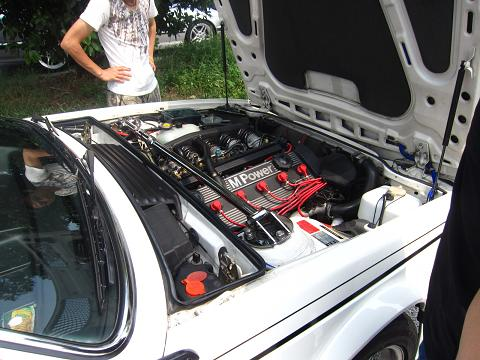 E24 M6乗りの方が参加^^ いつ見ても華麗なデザインにしばし見とれる。。 どこかで見たM635iにもM88エンジンが載っていたが、M6とM635iの違いは何なんだろう？ |
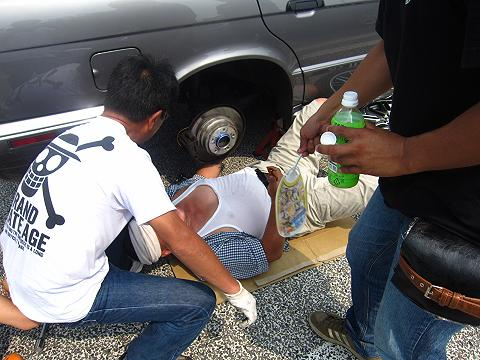 関西組はやっぱりメンテ（笑 そういえば、最近メンテオフが開催されていないなぁ・・・ そろそろみなさんネタが溜まってきてるのでは？ |
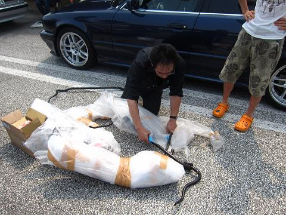 そんな中、主役のchachaさんが到着＾＾ トランクからは34の |
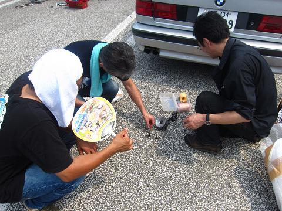 ブローしたエンジンから摘出されたピストンとバルブを手に、解説するchachaさん。 ピストンが万博公園にある「太陽の塔」の顔みたいな溶け方でした（笑 |
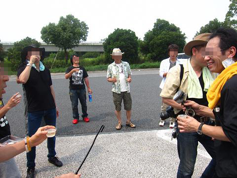 chachaさんを囲んで復活の祝杯！ で、カンパーイ！（もちろんノンアルコール） おめでと〜！^0^
|
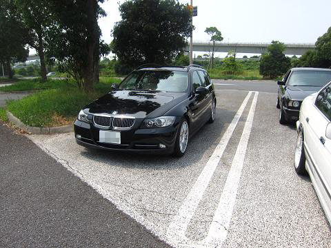 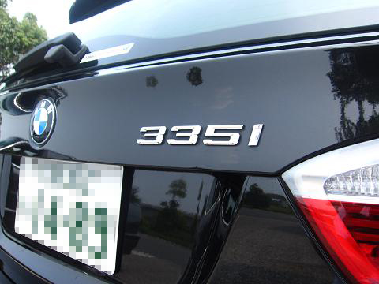 E34からE90に乗り換えたkidsさんのnew戦闘機！ E90 335i こりゃ迂闊にブチ抜くと仕返しが怖そ〜（笑
|
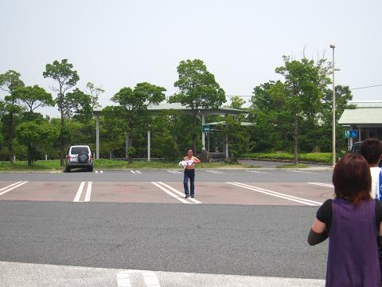 そろそろお昼です^^ 建物へ向かって歩いていると・・・！ だーれだ♪（笑
|
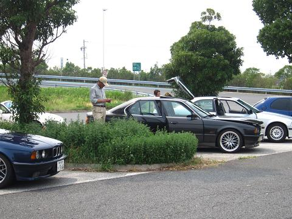 静岡からは、港のイチローさんが＾＾ お久しぶりでした〜！
|
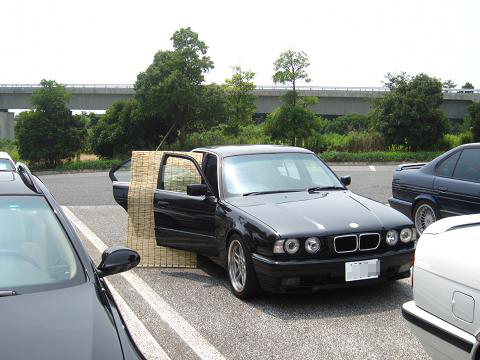 当日は猛暑で口を開けば「暑い〜」ってつぶやいていたように思います・・・ そうそうこんな日は、すだれで涼を〜 って、なんでやね〜ん！＾＾ Mゴローは暑さに耐え切れず、早めに退散しましたm(__)mゴメン
|
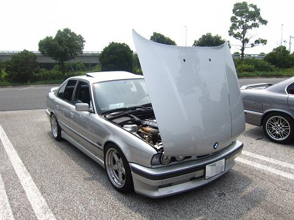 復活までの道程をchachaさんから聞けば聞くほど、このM5に対しての情熱を感じずにはいられませんでした。 普通の人なら、絶対に諦めてしまうだろう難関の数々・・・ そんな状況からでも復活したことを思うと、ますます簡単にE34から降りるわけにはいきませんね＾＾
|
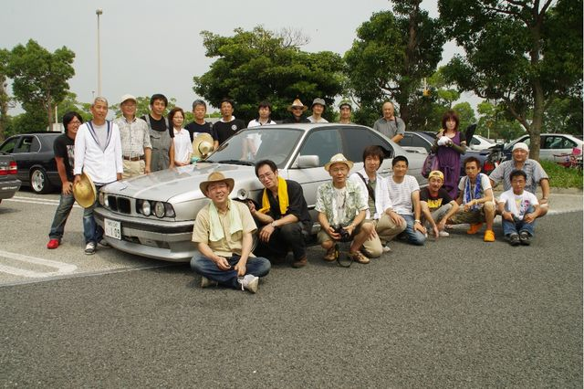 ←ALPYさん提供chacha号を囲んでの集合写真！ なんだかchacha号が喜んでいるように見えるのは気のせい？＾＾
|